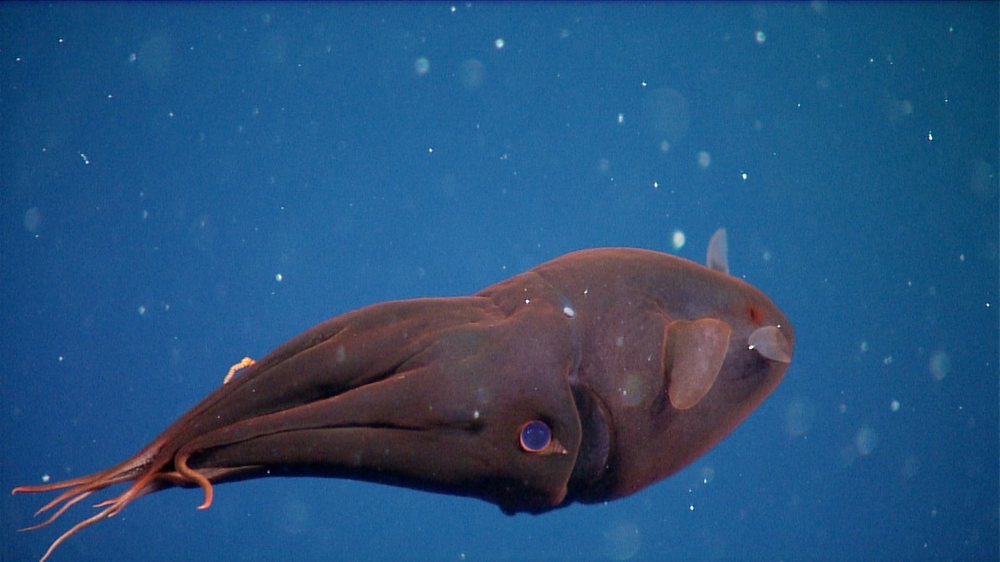
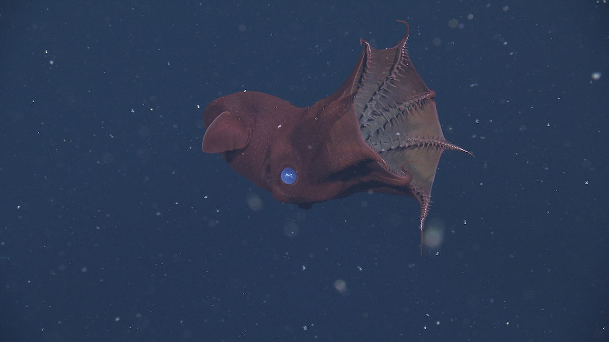
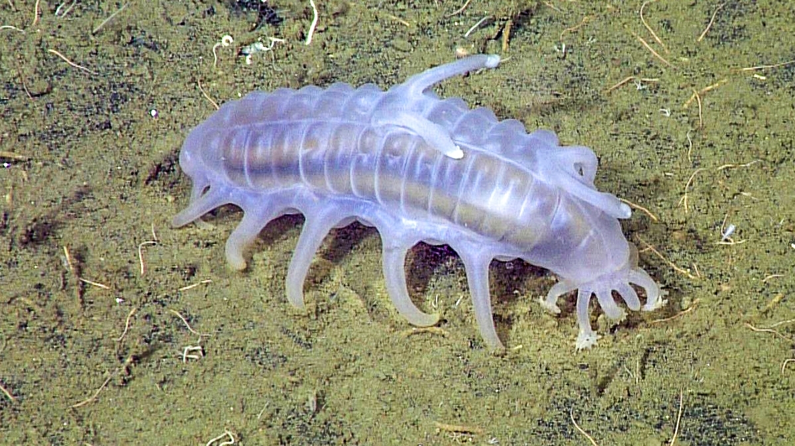
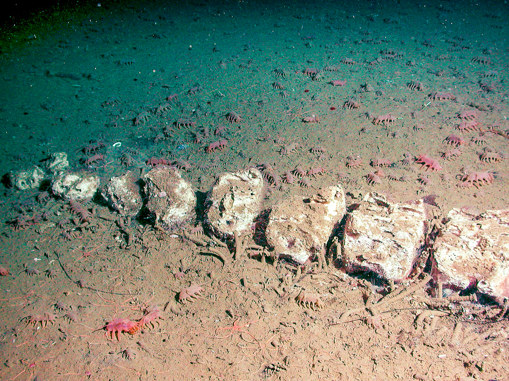
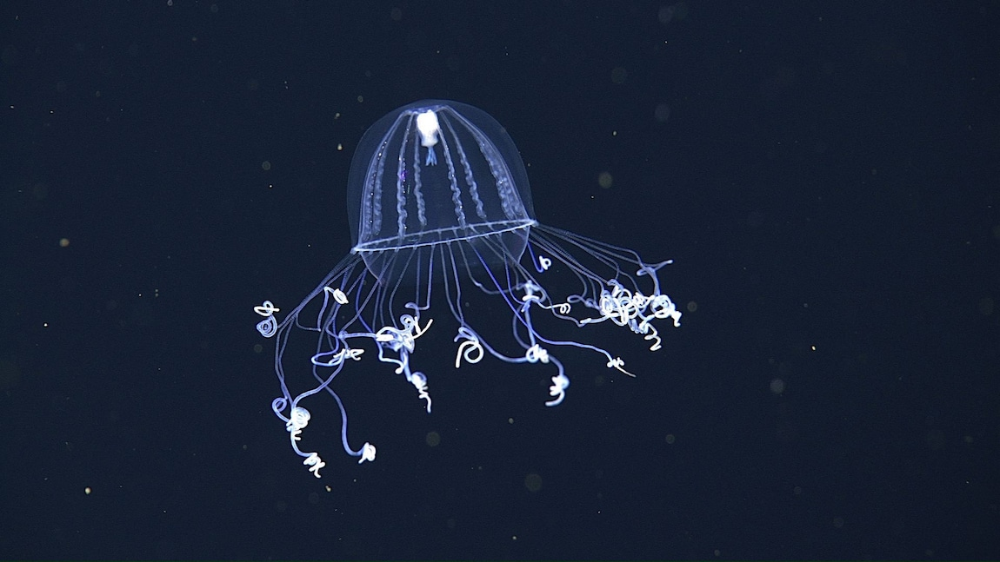
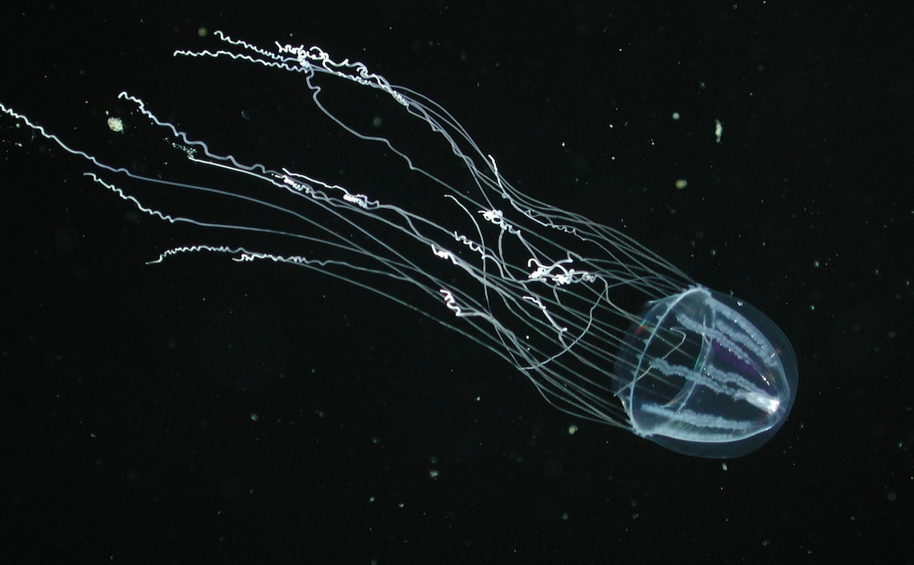

lifespan: about 8 to 10 years
stages of life: It begins it's life as a tiny larva drifting in the ocean. It grows and develops features that help it survive. When it is fully grown it drifts around the ocean
feeding habits: feeds on “marine snow,” which is made of tiny bits of dead plants, animals, and waste drifting down from above.
behavior characteristics: The vampire squid is a slow, calm deep sea animal that usually just drifts instead of swimming fast. It uses glowing lights to confuse predators and stays in dark, low oxygen water where not many other animals can live.
group behavior: They mostly live alone.
fun fact: They're not squid.


Lifespan: About 5 to 10 years
Stages of life: It starts as a tiny larva in the deep sea and grows legs and a soft body to move along the ocean floor. When fully grown, it crawls slowly across the sea bottom.
Feeding habits: Feeds on “marine snow” and detritus, which is dead plants, animals, and other tiny bits that fall to the sea floor.
Behavior characteristics: Moves slowly on the ocean floor using tube feet, can inflate its body to scare predators, and lives in very deep, dark water.
Group behavior: Sometimes many sea pigs are found in the same area, but they don't work together.
Fun fact: Sea pigs “walk” on the ocean floor using tiny tube feet and can even sense food buried in the mud from far away.


Lifespan: Unknown, but likely 1 to 2 years like many jellyfish
Stages of life: Starts as a tiny larva that floats in the water, then grows into a full jellyfish with long tentacles.
Feeding habits: Feeds on tiny plankton and small animals that drift in the deep ocean.
Behavior characteristics: Drifts slowly in the deep ocean using its bell to move, has long thin tentacles to catch food, and glows slightly to avoid predators.
Group behavior: Usually lives alone in the deep sea.
Fun fact: It has very long, thin tentacles that can stretch far to catch food.

